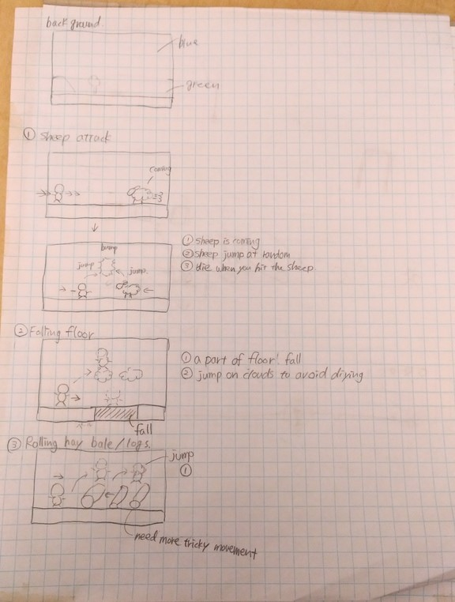
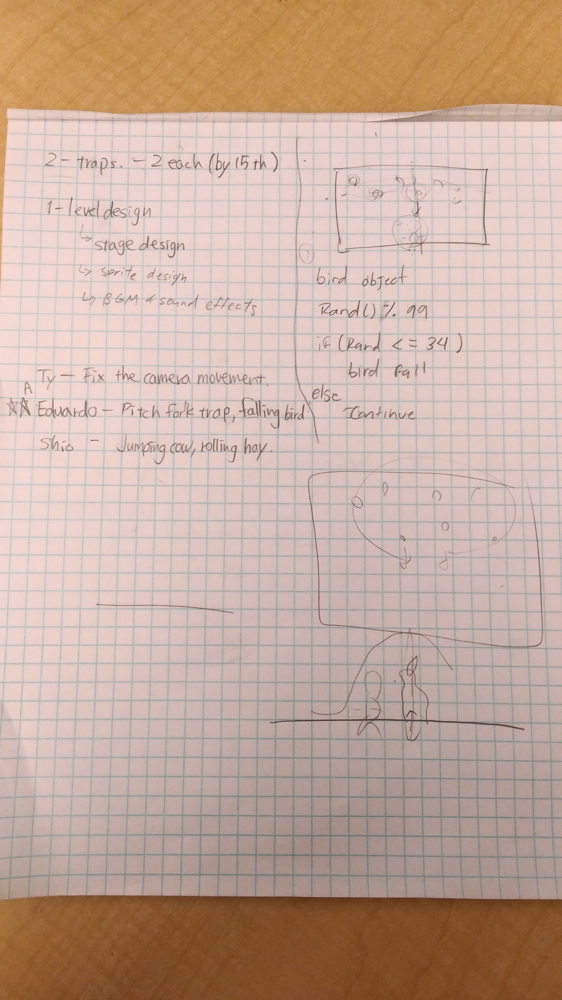
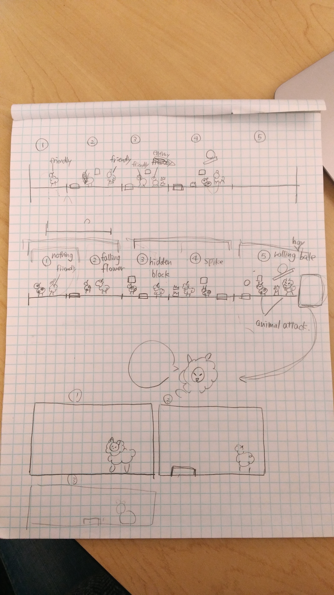
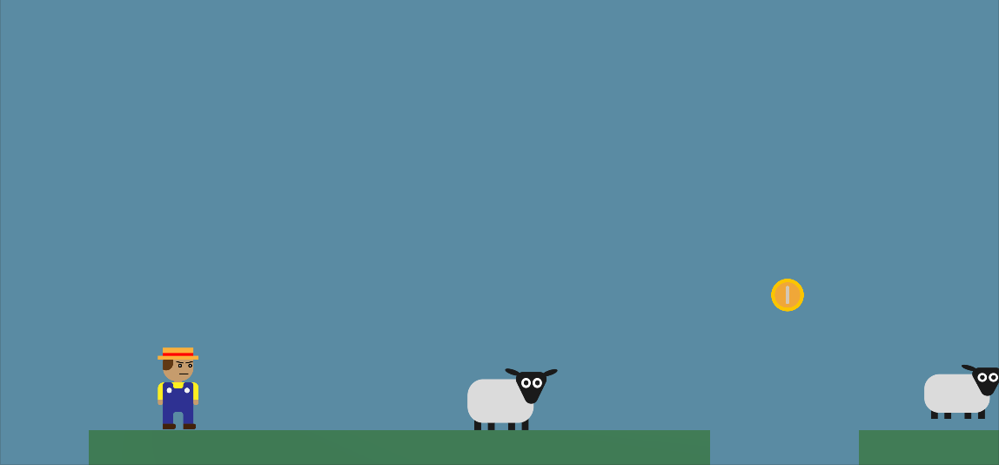
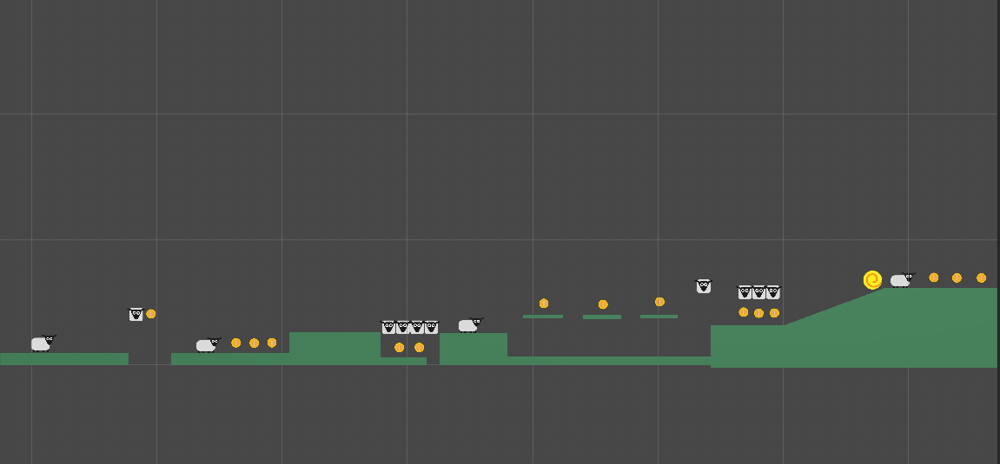

Game Progress
Update #1
For our first status update we worked on a variety of different things. We came to a compromise in which Ty and Shio would help on the design of the website through the use of wix, and Eduardo would port the changes into the actual site by coding it. The team created a platform (website) in which we will be able to give detailed information about the team, our game, and the progress of the game. The layout of the site is basically finished, but the design needs a bit more work, but everything was templatized to make things a lot easier for us later on. The updates of the website should be fairly easy since everything has been templatized, so all that will be needed is to replace image urls as well as just replacing the text with something different. We also worked on creating a brief low fidelity prototype to throw ideas of the game mechanics, and the feel and aesthetics of the game.
Update #2
For our second status update we worked on creating more low fidelity prototypes for the layout of the map and how we wanted everything to flow. We also discussed the types of traps we wanted and how we were going to be distributing the work. In terms of the current state of the game we are almost finished with everything. We all worked on coding the different mechanics of the traps and the player controls, and we have laid out the whole map of the game. Ty worked on creating the very first design of the map in Unity and he also created the assets that we needed for the sheep enemies, as well as some of the map assets and the character model. All that is needed for our game is just very small changes for polishing purposes, but everything is complete. We are ahead of our projected timeline, so we have more time to work on the final document.
   Post Mortem
What Went Well
Large Avaliability of Tutorials
In our game project, we used the program Unity, and the main way to control the characters and other sprites is to code with C#. None of our team has any knowledge to C# or other programing language, so we had to find numerous tutorials on the website to find out how to make each things happen. Lucky, there were many Unity tutorial on Youtubes and some site even gave us free lines of codes that we can just paste it on our games, so even with no knowledge, we were able to somehow make a solid game, and make the movements how we wanted to make. We were also able to get many inspiration of the game because there were many other games that our similar to our game (2D Platform with absurd traps) so we were able to get some trap ideas. For our prototype game, we used images from google to make a temporary sprites, and there were many images that we were quickly able to find images we were looking for.
Smooth Collaboration
What helped us to collaborate on this project was the Unity collaboration feature. Thanks to that, we were able to work on the project at the same time, and we were all able to update the game so we were able to create the game quickly and efficiently. For the game discussion, Slack helped us reach each other with our phone easily. We can tell each other what we’ve done and post images/links to see, which helped us smoothly progress our project even when we are not physically together at class. When we are at class, we meet up and discuss on what each people do, and plan on how we can improve the games. We set the weekly goal on Monday and divided individual tasks based on that. When we are together physically, we can write diagrams on the paper together which smoothly let us come up with game mechanics and level design. Another Bonus was that Taishi and Shio was Japanese so the communication was easily done when we had some difficulty explaining in english.
Simple Complexity of Game Mechanics
Most games that this class created are based on absurd movements of the player, so it would be expected to be difficult however, since our game is based on absurd traps, the movement itself did not need to be absurd, so we did not have to put in complicated codes for the movement, so most movement in our game were simple and we were able to easily find the tutorial on the internet. The only thing that might have been complex was the level design and trap placements because we had to think of an absurd location were the player will least expect it and people will fail because of that. Since the movement itself was simple, it made the game style seem like a simple easy game, when in reality the difficulty of this game is almost impossible to beat.
What We Could Have Done Better
Space For Originality
It was difficult to create a completely new game from scratch while we were using other games for inspiration because it would end us being almost or exactly the same game (cat mario and trap adventure), so it became difficult drawing the line between being inspired by a game, and copying it completely. However, we did find a way to make our game different from other games that we saw while keeping an absurd storyline. By adding a storyline, this made it more original and further away from the similarity of other games. Our theme is also completely different from any other games so that even when the game mechanic might be similar, the game itself can seem a little different.
Precise Team Roles
Throughout the project it was a bit difficult to adding team roles since we all had different skills and ways in which we wanted to contribute to the team. When we decided to have Eduardo make a custom website for our project, Taishi and Shio would have some difficulty contributing to that because we will not be able to edit the website, so we were only able to give eduardo advices by looking at the physical website and Eduardo will have to fix it himself. Also for the Unity programming, everyone doesn’t know C# for the game so it seemed time consuming and inefficient for everyone in our group to learn this language just to be able to program. Since we didn’t assign any team roles we just tried to make everything as equal as possible, so we all worked on every part of the project and we tried to divide the work as evenly as possible. What we did was we gave each people to program each traps, so that when we look for tutorials, we only have to search for only the program that moves the traps we were assigned.
Storyline
The Storyline of our game was unclear at first, because we were focused on making the mechanics of the game so at the first first half of the quarter, our state was same as the other trap absurd games. We agreed that our storyline will be like the Myth of sisyphus where the sisyphus rolls a boulder uphill then watching it roll back down again. So from that story, we decided to create a game where the level design repeats over and over again which makes it seem like the player is repeating the level and there is no end to the game. However, even when the level is repeating, each time it repeats the level becomes gradually difficult because the absurd traps increases when the player reaches the repeat.
What We'd Do Differently
Start Earlier
One of the things we wish we could have done differently would be to start the game earlier. We felt like the first two weeks of class could have been better used if we could have formed teams much earlier, since it would have given us more time to refine the game, and possibly add more features or add more complex mechanics.
More Preknowledge
Since we didn’t have any previous knowledge with working with unity the first few weeks were used trying to learn and get comfortable. Although we know that this is all part of the process we wish that there was a way in which we would have been able to learn some of this beforehand, or just have gotten more comfortable in using Unity previous to this project.
Beter Story
From the feedback we got for the game we realized that we focused a bit too much on the mechanics of the game and everything else, but we neglected the story a bit. We tried to mimic the story of The Myth of Sisyphus through our map design. We created a map that repeats itself, but gets progressively more and more difficult, while also having things changing. This was done to mirror the absurdity of the world and how things change without any specific reason or meaning.